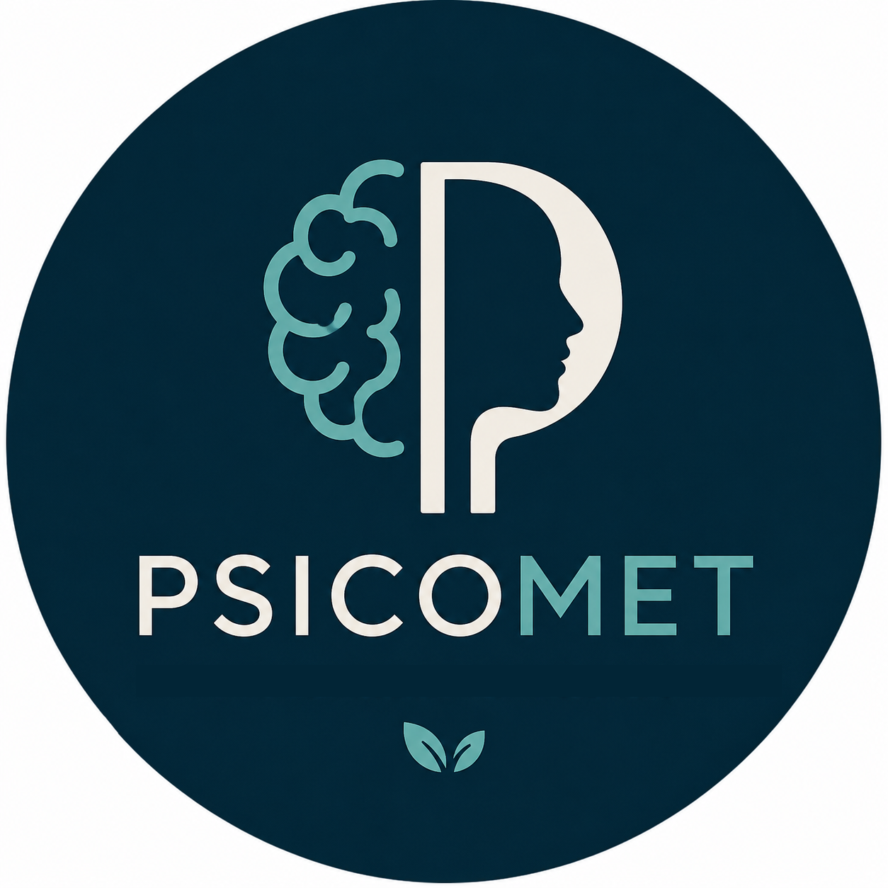

PSICOMET
Psicomet es un espacio dedicado a la divulgación de la psicología y a la promoción del bienestar emocional. A través de contenidos basados en la evidencia científica y de un servicio de psicoterapia online, busca acercar el conocimiento psicológico de manera clara, práctica y accesible, contribuyendo a una mejor comprensión de la mente y al cuidado de la salud mental.
Contenidos Audiovisuales
En el canal de TikTok de Psicomet comparto reflexiones y recursos breves sobre psicología, bienestar emocional y desarrollo personal.
@psicomet.psiPsicoterapia Online
Proceso psicoterapéutico para mejorar tu bienestar, con enfoque práctico, personalizado y basado en evidencia.
- Terapia individual para adultos
- Orientación psicológica online
- Ansiedad, estrés y depresión
- Crecimiento personal y autoestima
¿Qué es la psicoterapia online?
La psicoterapia online es un tratamiento psicológico estructurado, orientado a fortalecer los recursos personales y habilidades del consultante, con el objetivo de mejorar su calidad de vida. Este enfoque aborda situaciones como el estrés, la ansiedad, la depresión, la resolución de problemas y la regulación emocional, entre otras.
Se basa en los principios de la Psicología Cognitivo Conductual, integrando conocimientos de neurociencias, y haciendo foco en la relación entre pensamientos, emociones y conductas.
Durante el proceso terapéutico se consideran la historia de vida, el contexto actual y las características personales de cada consultante, para lograr una comprensión profunda de sus desafíos. Desde las primeras sesiones, se trabaja de manera conjunta en objetivos específicos, definidos con claridad, para dar respuestas concretas a necesidades puntuales.
El propósito de esta modalidad es que el consultante adquiera herramientas psicológicas prácticas, que pueda aplicar tanto durante el tratamiento como una vez finalizado, promoviendo cambios reales y sostenibles en su vida cotidiana.
¿Cómo funcionan las sesiones?
Las sesiones son semanales y tienen una duración de entre 45 minutos y una hora. Se realizan a través de Google Meet, una plataforma segura de videollamadas que garantiza la privacidad de los datos y no requiere instalar ninguna aplicación: solo se necesita un celular o computadora con acceso a Internet.
El tratamiento está a cargo de un psicólogo matriculado, que acompaña al consultante en un proceso de autodescubrimiento y aprendizaje. A lo largo de este camino, se trabajan habilidades y recursos personalizados según las necesidades específicas de cada persona.
El pago de las sesiones puede realizarse a través de Rapipago, Pago Fácil, Mercado Pago, Paypal, Western Union, tarjetas de crédito o transferencia bancaria mediante CBU.
Beneficios
En los últimos años, diversos estudios científicos han demostrado que la psicoterapia online es tan eficaz como los tratamientos presenciales prolongados para tratar muchos problemas psicológicos.
A diferencia de otros enfoques tradicionales, la terapia online es un método moderno y validado, que se enfoca en objetivos claros y resultados concretos a corto plazo.
Gracias a la tecnología, podés acceder a terapia desde cualquier lugar, usando solo una computadora o teléfono con conexión a Internet. Esto elimina dificultades como el transporte o la falta de tiempo.
Muchas personas que viven en zonas con poco acceso a atención profesional, o que enfrentan barreras físicas, psicológicas o idiomáticas, han encontrado en la terapia online una solución accesible y cómoda.
Además, hay quienes prefieren esta modalidad por la flexibilidad y privacidad que ofrece.
Limitaciones
Es importante aclarar que la psicoterapia online no es recomendada para trastornos severos que afecten gravemente al consultante o que impliquen riesgo para sí mismo o para terceros.
También hay casos específicos donde, aunque no haya gravedad o riesgo, esta modalidad no es la mejor opción y puede requerir tratamientos más intensivos, prolongados o presenciales.
Por eso, en la primera sesión se evalúa si este tipo de terapia se ajusta a tus necesidades y características personales.
Requisitos técnicos
Para realizar la psicoterapia online, es necesario contar con una conexión a Internet estable que permita una videollamada fluida, con buena calidad de imagen y sonido, para que la experiencia sea cómoda y efectiva.
Sobre mí
Lic. Federico Bina (MP:13.107)
Soy psicólogo graduado en la Universidad Nacional de Córdoba. Acompaño a jóvenes y adultos en procesos terapéuticos, tanto presenciales como virtuales. En este espacio, centrado en la atención a distancia, ofrezco psicoterapia desde un enfoque basado en la Terapia Cognitivo Conductual, integrada con aportes de las Neurociencias. Mi objetivo es promover el bienestar emocional y facilitar el desarrollo personal a través de un tratamiento eficaz, personalizado y orientado a resultados concretos.
Contacto
¿Querés empezar terapia o tenés alguna consulta?
Contactame por WhatsApp